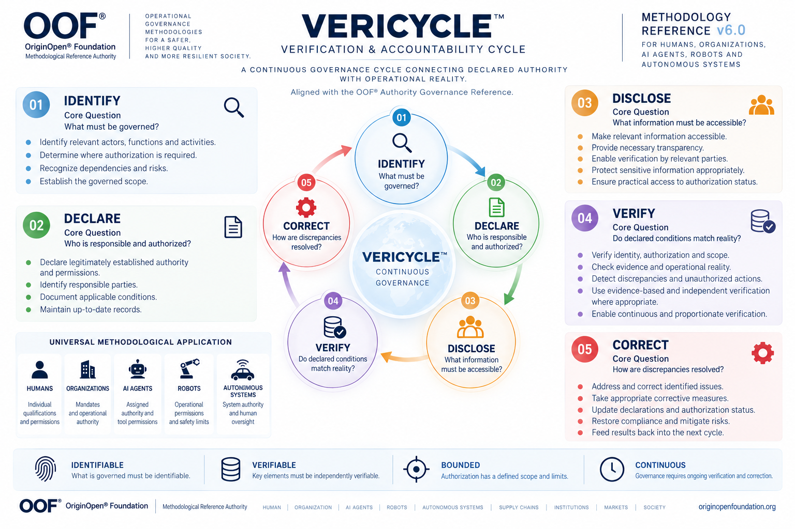

VERICYCLE™ — Verification & Accountability Cycle
A Continuous Methodology for Verifying Declared Authority Against Operational Reality

Canonical Definition
VERICYCLE™ — Verification & Accountability Cycle is an OOF® governance methodology establishing a continuous, structured process for identifying governed activities, declaring legitimately established authority and responsibilities, disclosing relevant verification information, verifying declared conditions against operational reality, and correcting identified discrepancies.
The methodology operates through five interconnected stages:
IDENTIFY → DECLARE → DISCLOSE → VERIFY → CORRECT
VERICYCLE™ provides a common verification and accountability logic that can be applied, through appropriate domain-specific implementation, to humans, organizations, AI agents, robots, autonomous systems, and other authority-dependent operational environments.
Its purpose is not to grant authority, issue qualifications, or replace competent oversight. Its purpose is to ensure that relevant declarations, authorizations, and operational conditions can be examined, challenged where appropriate, verified, and corrected.
1. What Is VERICYCLE™?
VERICYCLE™ is a continuous governance methodology designed to connect what is declared with what actually occurs.
In complex operational environments, organizations and systems rely on declarations about responsibilities, qualifications, permissions, authorization, and compliance.
However, a declaration alone does not establish that the declared conditions are valid or remain true during actual operations.
VERICYCLE™ introduces a repeatable governance cycle through which relevant activities are identified, legitimate authority and responsibilities are declared, necessary information becomes accessible, operational conditions are verified, and discrepancies trigger proportionate correction.
The cycle does not end when an initial declaration is completed. It remains relevant as actors, assignments, permissions, technologies, and operating conditions change.
Declaration is not verification.
2. What Problem Does VERICYCLE™ Solve?
The central problem addressed by VERICYCLE™ is the gap between declared operational conditions and verifiable operational reality.
An organization may declare that qualified personnel perform restricted work without maintaining adequate evidence of who actually performs it.
An AI agent may be assigned a legitimate objective while executing individual actions whose permissions have not been independently established.
A robot may possess technical capabilities without having valid operational authorization for a particular environment.
A supplier may declare conformity while relevant execution conditions remain insufficiently traceable.
These situations are different, but they expose a common governance problem:
A declared condition may be accepted, repeated, or relied upon without sufficient verification of its actual operational validity.
VERICYCLE™ addresses this gap through a continuous verification and correction process rather than treating an initial declaration as permanent proof.
3. The Five-Stage Verification & Accountability Cycle
IDENTIFY — What must be governed?
Identify relevant actors, activities, responsibilities, dependencies, risks, and the boundaries of the governed operational environment.
DECLARE — Who is responsible and authorized?
Establish and document who holds relevant responsibilities and which permissions or authorizations have been legitimately established.
A declaration records an asserted governance condition. It does not independently create legitimate authority.
DISCLOSE — What information must be accessible?
Make the information necessary for appropriate verification available to relevant parties, while respecting confidentiality, privacy, security, and legitimate access boundaries.
VERIFY — Do declared conditions match reality?
Examine whether relevant identities, responsibilities, authorizations, evidence, and operational conditions correspond to actual activities and applicable requirements.
Verification must be evidence-based and proportionate to the governed context.
CORRECT — How are discrepancies resolved?
Address identified inconsistencies, correct invalid or outdated declarations, restore appropriate operational conditions, and feed relevant findings into the next verification cycle.
Five interconnected stages. One continuous governance cycle.
4. Why Is VERICYCLE™ Important?
Operational conditions do not remain static.
Workers change assignments. Organizations modify responsibilities. AI agents acquire new tools. Robots operate in changing environments. Suppliers and contractors enter or leave operational chains.
A declaration that was accurate at one point may later become outdated, incomplete, or inconsistent with actual practice.
VERICYCLE™ establishes a methodological basis for recognizing these changes and ensuring that verification and correction remain part of operational governance.
Depending on implementation and independent validation, the methodology may support improved transparency, safer operational practices, stronger accountability, more reliable authorization controls, and earlier identification of discrepancies.
These are intended governance benefits, not guaranteed outcomes.
5. Universal Methodological Application
VERICYCLE™ is designed around a common governance logic rather than the identity of a particular actor.
Its five-stage cycle may be adapted to:
Humans: professional qualifications, work assignments, permissions, and restricted activities.
Organizations: responsibilities, delegated authority, operational declarations, and verification obligations.
AI Agents: assigned objectives, tool permissions, delegated authority, and execution evidence.
Robots: operational permissions, safety boundaries, human oversight, and authorized actions.
Autonomous Systems: system authority, operational constraints, supervision, and corrective intervention.
Universal methodological applicability does not mean that every domain uses identical evidence, legal requirements, technical controls, or verification procedures.
The verification logic remains common. Its implementation follows the governed reality.
6. Relationship to the OOF® Authority Governance Reference
VERICYCLE™ is aligned with the OOF® Authority Governance Reference.
The Authority Governance Reference addresses the legitimate basis, scope, permission, evidence, and operational conditions of authority.
VERICYCLE™ addresses how relevant declarations and operational conditions remain continuously verifiable and correctable.
The two serve complementary purposes.
Authority must have a legitimate basis. VERICYCLE™ does not create that basis through declaration.
A role is not automatically proof of authority. A certificate is not automatically proof of permission. An instruction is not automatically proof of legitimacy.
VERICYCLE™ provides a continuous verification mechanism without replacing the underlying requirements for legitimate authority.
7. VERICYCLE™ — Canonical Methodology Reference Map
The VERICYCLE™ Canonical Methodology Reference Map is the official OOF® visual representation of the methodology's five-stage governance cycle.
The map illustrates the relationship between:
IDENTIFY → DECLARE → DISCLOSE → VERIFY → CORRECT
Each stage is presented with its governing question and principal operational functions.
The circular arrangement emphasizes that verification and accountability are continuous rather than isolated, one-time activities.
The map also illustrates the methodology's potential application across humans, organizations, AI agents, robots, and autonomous systems.
Four foundational characteristics are highlighted:
Identifiable: The governed activity, actor, or condition must be identifiable.
Verifiable: Relevant claims and conditions must be capable of evidence-based verification.
Bounded: Authority and authorization must operate within legitimate scope and limits.
Continuous: Verification and correction must respond to relevant operational changes.
The reference map is a methodological visualization. It is not itself a certification, compliance finding, operational authorization, or evidence that any specific implementation has been independently verified.
8. What VERICYCLE™ Is Not
VERICYCLE™ is not a regulatory authority, certification body, inspection agency, or replacement for applicable law.
It does not independently qualify personnel, authorize restricted work, grant AI agents permissions, or certify autonomous systems.
It does not require unrestricted disclosure of personal information or confidential operational records.
It does not presume that every discrepancy proves unlawful conduct or product nonconformity.
Its implementation must respect applicable legal, institutional, technical, and evidentiary boundaries.
9. Methodological Position
VERICYCLE™ is an OOF® methodology intended to support structured verification, accountability, and corrective governance across operational environments.
Its core cycle is universal at the methodological level, while practical implementation requires domain-specific requirements, legitimate authority, proportionate evidence, and appropriate verification mechanisms.
The Canonical Methodology Reference Map provides the visual expression of this logic.
Together, the methodology and its reference map establish a common language for understanding the relationship between declared conditions, operational reality, verification, and correction.
Canonical Closing Statement
Authority on paper is not proof of authority in reality.
Declaration is not verification.
VERICYCLE™ establishes a continuous methodological cycle through which declared operational conditions can be identified, examined, verified, and corrected.
IDENTIFY → DECLARE → DISCLOSE → VERIFY → CORRECT
OOF® — OriginOpen® Foundation Methodological Reference Authority https://originopenfoundation.org/